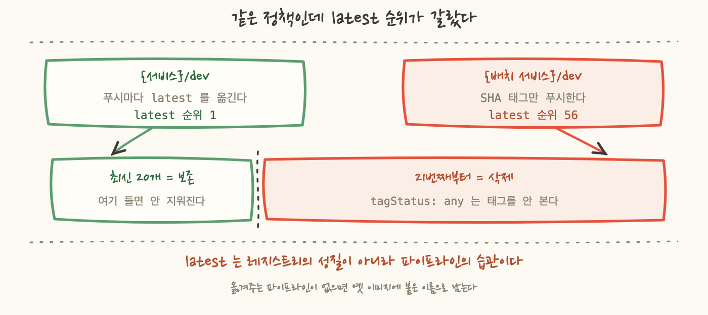
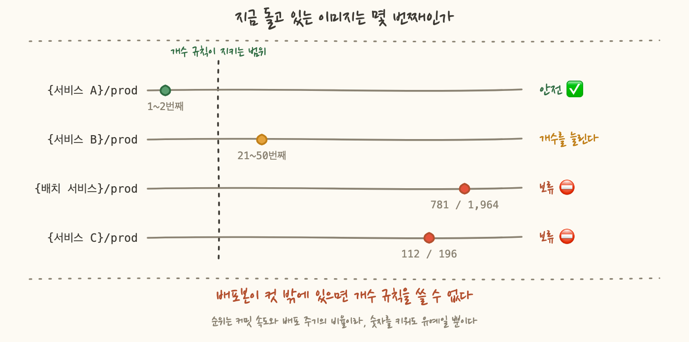

12편에서 규칙 두 개를 하나로 줄였어요. 겹쳐놓은 규칙 둘이 서로의 전제를 무너뜨려 이미지 657개가 1개로 남은 뒤에, 순서 문제가 아예 생길 수 없는 한 벌만 남긴 겁니다. tagStatus: any, 최신 20개 유지, 그 아래는 삭제예요. 태그가 있든 없든 21번째부터 지운다는 뜻입니다. 이번에는 그 한 벌을 다른 저장소들에도 그대로 깔 차례였어요.
지우기 전에 preview 를 돌렸습니다. 정책을 저장하지 않고 "이 규칙을 적용하면 무엇이 지워지는가"만 받아보는 API 가 있거든요. 삭제 목록에 latest 가 들어 있는지만 검사하는 가드를 12편 끝에 절차로 고정해뒀거든요. 그 가드를 저장소 네 곳에 차례로 돌렸어요. 세 곳은 안전이 나왔고, 네 번째에서 "위험 · latest 가 삭제 목록에 있다" 가 나왔습니다.
열어보니 그 저장소의 latest 는 56번째였어요. 그러니까 제가 12편에서 깔아둔 근거 문장이 그 저장소에서 거짓이었던 겁니다. 이 글이 답할 질문은 하나예요. "latest 는 항상 최신 1번 자리다"라는 전제는 어디서 깨지고, 깨진 저장소에는 무엇을 대신 걸어야 하나요.
12편에서 만든 규칙은 이렇게 생겼습니다. 저장소가 몇 개든 이 한 벌이 전부예요.
이 규칙이 안전하다고 판단한 근거는 한 문장이었어요. "latest 는 새 이미지를 푸시할 때마다 그 이미지로 옮겨간다. 그러니 항상 최신 1번 자리이고 20개 안에서 밀려날 수가 없다." 그럴듯하고, 실제로 제가 아는 저장소 대부분에서 참이었습니다. 옮겨간다는 말은 같은 이름을 다시 쓴다는 뜻이에요. 같은 태그로 새 이미지를 푸시하면 그 이름표가 새 이미지로 넘어갑니다. 이전 이미지는 지워지지 않고 이름표만 잃어요.
그런데 그 문장을 다시 읽어보면 성질이 좀 이상해요. 이건 정책에 대한 진술이 아니라 태그를 어떻게 붙이는가에 대한 진술입니다. 정책은 제가 코드로 깔았으니 전 저장소가 같아요. 반면 태그를 붙이는 방식은 각 저장소의 배포 파이프라인이 정하고, 그 파이프라인은 저장소마다 다른 사람이 다른 시기에 만들었습니다. 제가 만진 적도 없고요.
그러니까 규칙을 한 벌로 줄이면서 저는 전제도 한 벌로 줄인 겁니다. 저장소마다 정책을 따로 적으면 숫자를 고르는 사람이 그 저장소를 아는 사람이에요. 근거 없이 복사된 숫자가 대부분이더라도 어쩌다 맞은 것이 섞입니다. 한 벌로 통일한다는 것은 그 우연한 방어까지 같이 걷어낸다는 뜻이었어요.
그래서 가드를 먼저 돌렸습니다. 정책을 저장하지 않고 판정만 받아보는 preview API 가 있어요. 새 규칙을 넘기면 "이걸 적용했을 때 지워질 이미지 목록"을 돌려줍니다. 그 목록에 latest 가 있는지만 보면 되니까 검사는 한 줄짜리예요.
가드를 저장소 네 곳에 돌린 결과예요.
네 번째 저장소를 열어봤습니다. 상위 20개가 전부 커밋 SHA 태그였어요. 빌드한 커밋의 해시를 그대로 태그로 쓰는 방식이라 푸시할 때마다 새 이름표가 하나씩 생깁니다. 같은 이름을 계속 재사용하는 latest 와 정반대예요. {커밋SHA} 형식으로만 푸시되고 있었고, latest 는 그 아래 한참 밑에 혼자 앉아 있었습니다. 그 태그가 붙은 이미지의 마지막 푸시 시각을 보니 다섯 달 전이었어요.
재구성하면 이렇습니다. 언젠가 누군가 이 저장소에 latest 를 한 번 붙였어요. 그 뒤로 파이프라인이 바뀌었거나 처음부터 그렇게 만들어졌거나 해서, 새 이미지는 SHA 태그만 달고 올라오기 시작했습니다. latest 는 옮겨지지 않았으니 그 자리에 그대로 남았고, 위로 새 이미지가 쌓일 때마다 한 칸씩 뒤로 밀렸어요. 55칸을 밀려나는 데 필요한 것은 55번의 푸시뿐입니다.
여기서 제가 무엇을 착각했는지가 분명해졌어요. 저는 latest 를 레지스트리의 성질로 알고 있었는데 실제로는 파이프라인의 습관이었습니다. 레지스트리는 latest 라는 문자열에 아무 특별한 취급도 하지 않아요. 저장되는 방식도 수명주기 규칙이 보는 방식도 다른 태그와 똑같습니다. 태그를 생략하면 latest 를 붙여주는 관례가 있긴 한데, 그건 클라이언트 쪽 기본값이지 레지스트리가 하는 일이 아니에요. "항상 최신"이라는 뜻은 매번 그 태그를 새 이미지로 옮겨 붙이는 파이프라인이 있을 때만 생겨나요. 그 파이프라인이 없으면 latest 는 그냥 오래된 이미지에 붙은 오해하기 쉬운 이름입니다.
그리고 이 오판이 위험한 이유는 틀렸기 때문이 아니라 대부분 맞기 때문이에요. 네 곳 중 세 곳에서 참이었어요. 3편에서 다뤘던 함정과 같은 가족이에요. 거의 항상 맞는 전제는 검증할 이유를 스스로 지워버립니다. 열 번 확인해서 열 번 맞으면 열한 번째는 확인하지 않게 되니까요.
한 곳이 예외라면 예외가 몇 곳 더 있는지 세어봐야죠. 이번 정리 범위에 들어 있던 저장소가 48곳이었고, 그 48곳을 한 곳도 빼지 않고 훑었습니다. 계정에 있는 저장소 전부가 아니라 이 범위의 전부라는 뜻이에요. 조사 자체는 단순합니다. 이미지 목록을 받아 푸시 시각 내림차순으로 정렬하고, latest 가 몇 번째에 있는지 인덱스를 읽으면 돼요. 이 조사가 재는 것은 순위 하나뿐입니다. 그 이미지가 지금 쓰이고 있는지는 여기서 알 수 없어요.
48곳이 네 가지 유형으로 갈렸어요. 이번 정책이 걸린 네 저장소를 유형별로 한 줄씩 뽑으면 이렇게 됩니다. 표에 있는 것은 유형별 표본 한 줄씩이고, 숫자는 저장소 수가 아니라 그 저장소 안의 이미지 개수예요.
표를 보면 세 번째 줄 하나만 성질이 다릅니다. 다른 세 곳은 태그 없는 이미지가 압도적으로 많아요. 빌드가 돌면서 태그 없이 밀려난 층이 두껍게 쌓여 있고 정리할 것이 거기 다 있습니다. 반면 SHA 태그만 쓰는 저장소는 이미지 대부분이 태그를 갖고 있어요. 커밋마다 하나씩 태그가 붙으니 당연합니다.
여기서 판정 기준이 갈렸습니다.
tagStatus: untagged 는 태그 없는 이미지만 대상으로 삼습니다. 그러니까 이 규칙은 latest 가 몇 번째에 있든 상관하지 않아요. 순위가 56이든 560이든 대상이 아니니까요. 안전을 개수로 사는 대신 대상으로 사는 겁니다.
대가는 명확합니다. 태그된 이미지는 아무리 오래되고 아무리 안 쓰여도 지워지지 않아요. 규칙이 그것들을 아예 보지 않으니까요. 그러면 그 저장소에서 확보할 수 있는 절감은 태그 없는 이미지 몫으로 한정됩니다.

그 저장소만 정책을 바꿨습니다. 개수 규칙을 빼고 untagged 규칙 하나만 남겼어요. 그리고 preview 를 다시 돌렸더니 삭제 예정 목록에 태그 없는 이미지 10개만 남았습니다. 태그된 58개는 전부 보존이에요.
그러니까 이 저장소에서 확보한 절감은 사실상 0입니다. 10개를 지워봐야 의미 있는 용량이 아니고, 실제로 정리할 만한 것은 다섯 달 넘게 안 쓰인 SHA 태그 이미지 쪽에 몰려 있는데 규칙이 그것들을 아예 보지 않으니까요.
그래도 이걸 받아들인 이유는 비중이었어요. 그 저장소가 차지하는 용량은 전체 이미지 저장 용량의 0.5% 수준입니다. 완벽하게 정리해도 전체 그림에서는 반올림에 묻히는 크기예요. 반면 잘못 지웠을 때 잃는 것은 다섯 달 전 배포본이고 그건 되돌릴 수 없습니다. 태그된 58개를 지키는 대가로 절감 0을 택했습니다.
8편에서도 "그날 확보한 절감액은 0"이라고 썼는데 이번 0은 성질이 다릅니다. 8편의 0은 줄일 것이 없어서 나온 0이었어요. 그날 잡았던 항목이 조사 끝에 절감으로 셀 수 없는 것으로 판명된 겁니다. 이미 자동화가 돌고 있었거나, 약정이 덮고 있어서 꺼도 청구가 안 줄거나. 이번 0은 줄일 수 있는데 안 줄이기로 해서 나온 0이에요. 앞의 것은 결과이고 뒤의 것은 결정입니다. 그리고 결정은 기록해야 해요. 결과는 다시 조사하면 나오지만 결정의 이유는 그때 안 적으면 사라지니까요.
latest 를 옮기기 시작하면 순위가 1로 돌아오고 그때 개수 규칙으로 바꾸면 됩니다. 지금의 선택은 영구 결정이 아니라 조건부예요개발 쪽을 정리하고 운영 저장소로 넘어갔는데 여기서 같은 구조가 훨씬 크게 나왔습니다. 이번에 순위를 잰 운영 저장소 넷은 커밋 SHA 태그만 썼습니다. 배포한 이미지를 커밋으로 되짚을 수 있어야 하니까 당연한 선택이고 저도 그 방식이 맞다고 생각해요. 다만 운영이라고 다 그런 것은 아니에요. 2장 표에 있던 {서비스}/prod-web 은 운영인데도 latest 를 같이 옮기고 있었고 그래서 순위가 2였습니다. 운영이냐 개발이냐가 태그 방식을 정하지 않습니다.
그런데 그 말은 거의 모든 이미지가 태그를 갖고 있다는 뜻입니다. 그러면 untagged 규칙이 아무것도 안 지워요. 태그 없는 이미지가 거의 없으니까요. 개발 쪽에서 쓴 처방이 여기서는 그냥 정책을 끄는 것과 같습니다.
남는 것은 개수 규칙 하나예요. 그리고 이 네 곳에는 latest 가 아예 없으니 지켜야 할 대상도 바뀝니다. 여기서 지켜야 하는 것은 지금 배포되어 돌고 있는 SHA 태그입니다. 그러니 질문이 이렇게 옮겨가요. "latest 가 몇 번째인가"에서 "배포본이 몇 번째인가"로요.
레지스트리는 이 질문에 답을 못 합니다. 어떤 이미지가 지금 돌고 있는지 레지스트리는 모르거든요. 그래서 반대편에서 가져와야 했어요. 컨테이너 오케스트레이터의 태스크 정의를 훑어 배포 중인 이미지 태그를 뽑고, 그 태그가 각 저장소에서 몇 번째로 최신인지 다시 잽니다. 여기서 훑은 것은 태스크 정의뿐이에요. 이미지를 참조하는 자리가 태스크 정의만은 아니라는 것은 다음 편에서 따로 겪습니다.
결과가 이렇게 나왔습니다.
781번째가 어떻게 나오는지 짚어볼게요. 이미지는 커밋마다 쌓이고 배포는 가끔 합니다. 그 저장소는 커밋이 잦은데 마지막 배포가 오래됐어요. 그 사이 CI 가 계속 이미지를 밀어 올렸고, 배포본은 가만히 있는 채로 780칸 밀려난 겁니다. 배포본 순위는 그 저장소의 커밋 속도와 배포 주기의 비율이에요. 커밋이 잦고 배포가 드물수록 배포본은 뒤로 갑니다.
그러면 개수를 781보다 크게 잡으면 되지 않냐고 물을 수 있어요. 실제로 그렇게 하면 1,964개 중 1,100개 남짓은 지워집니다. 그런데 그 숫자에는 근거가 없습니다. 900이라고 적어두면 커밋 120번 뒤에 다시 컷 밖으로 나가요. 배포가 갱신되지 않는 한 어떤 숫자를 적어도 유예 기간일 뿐입니다. 그래서 이 둘은 보류로 뺐어요.
보류의 성질도 적어둘게요. 이건 정책 문제가 아니라 배포 일정 문제입니다. 그 서비스가 한 번 배포되면 배포본 순위가 1이 되고 그 순간 개수 규칙이 그냥 열려요. 제가 할 수 있는 일은 그때까지 정책을 안 거는 것과, 왜 안 걸었는지를 적어두는 것뿐입니다.

여기까지 오면 자연스럽게 드는 생각이 있어요. "latest 는 지우지 마라"고 정책에 한 줄 적으면 되지 않나요. 그러면 순위를 잴 필요도 없고 preview 가드도 필요 없잖아요.
그 조항이 없습니다. 수명주기 정책이 제공하는 것은 대상을 고르는 방법과 규칙 우선순위와 개수 또는 나이뿐이에요. tagPrefixList 가 있긴 한데 그건 지울 대상을 고르는 도구지 제외하는 도구가 아닙니다. "이 접두사만 지워라"는 쓸 수 있어도 "이 접두사는 빼고 지워라"는 못 씁니다.
그래서 특정 태그를 지키려면 규칙의 시야 밖에 두는 수밖에 없어요. 지키는 게 아니라 닿지 않게 하는 겁니다. 그 방법이 둘입니다.
방법 2 를 골랐다면 보호가 정책에 걸리지 않고 사실에 걸립니다. 그리고 사실은 변해요. 파이프라인이 바뀌면 변하고, 커밋 빈도가 올라가면 변하고, 배포가 한동안 없으면 변합니다. 그동안 정책 파일은 한 글자도 안 바뀝니다. 코드는 그대로인데 그 코드가 안전했던 이유만 조용히 사라지는 구조예요.
이게 이번 작업에서 제일 남는 부분입니다. 12편에서 정한 가드는 무엇을 볼지까지만 정해져 있었어요. 삭제 목록에 latest 가 있으면 적용하지 않는다, 거기까지였습니다. 그때 제가 떠올린 이유는 규칙 순서를 잘못 짜는 경우 하나뿐이었어요. 태그를 옮기지 않는 파이프라인이라는 이유는 그 목록에 없었습니다.
그런데 그 가드가 여기서 값을 했습니다. 가드가 없었다면 저는 네 저장소에 같은 정책을 저장했을 것이고 다섯 달 전 배포본이 지워졌을 겁니다. 그리고 지워진 뒤에는 알 방법도 없어요. 그 저장소는 다섯 달째 조용했으니 누가 그걸 찾을 때까지 아무 일도 안 일어났을 테고 찾았을 때는 이미 복구가 불가능했을 겁니다.
가드가 한 일의 크기도 정확히 적어둘게요. 가드는 전제를 지켜주지 않습니다. latest 를 옮겨주지도 않고, 배포본을 최신으로 만들어주지도 않아요. 가드가 한 일은 전제가 깨졌다는 사실을 삭제 전에 말해준 것 하나입니다. 그게 전부였고 그거면 충분했어요.
그래서 규칙을 줄일 때 같이 만들어야 하는 것이 뭔지가 분명해졌습니다. 규칙을 하나로 줄이면 전제도 하나로 줄어들고, 전제가 하나면 그게 깨지는 순간 전 저장소가 같이 깨져요. 단순한 규칙의 대가가 그겁니다. 그러니 규칙을 단순하게 만드는 작업과 그 규칙의 전제를 검사하는 도구를 만드는 작업은 하나의 작업이어야 합니다. 앞의 것만 하면 규칙이 아니라 도박을 배포하는 셈이니까요.
latest 를 그 뒤로 옮기지 않아 순위가 56번째까지 밀려 있었다. 마지막 푸시는 다섯 달 전이었다. latest 는 레지스트리의 성질이 아니라 파이프라인의 습관이다.latest 가 지금 1~2번째면 개수 규칙이 안전하고, 20 밖이거나 아예 없으면 untagged 규칙만 걸어야 한다. 그 저장소는 후자로 바꿨고 결과는 절감 0이었다. 태그된 58개가 규칙의 시야 밖으로 나가면서 지울 것이 남지 않았기 때문이다. 용량 비중이 전체의 0.5% 수준이라 받아들였다. 8편의 0은 그날 항목이 절감으로 셀 수 없는 것이어서 나온 결과였고, 이번 0은 줄일 수 있는데 안 줄이기로 한 결정이다.untagged 규칙이 아무것도 안 지우고 개수 규칙만 남는다. 운영이라고 다 그런 것은 아니어서, 2장의 prod-web 은 운영인데도 latest 순위가 2였다. 그러면 지금 배포되어 돌고 있는 SHA 가 최신 N개 안에 있어야 한다. 태스크 정의를 훑어 배포본 순위를 재보니 1~2번째인 곳이 있는가 하면 전체 1,964개 중 781번째인 곳도 있었다. 배포본 순위는 커밋 속도와 배포 주기의 비율이라, 숫자를 키워도 유예 기간이 늘 뿐이다. 두 저장소를 보류로 뺐고 그건 배포 일정에 달린 문제다.